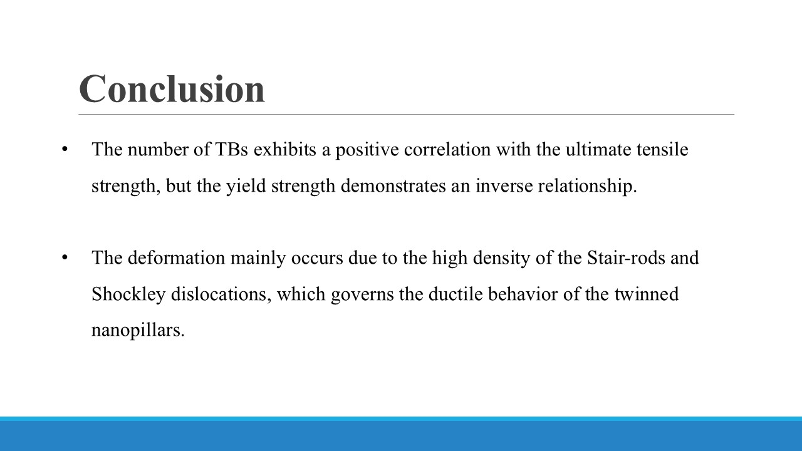
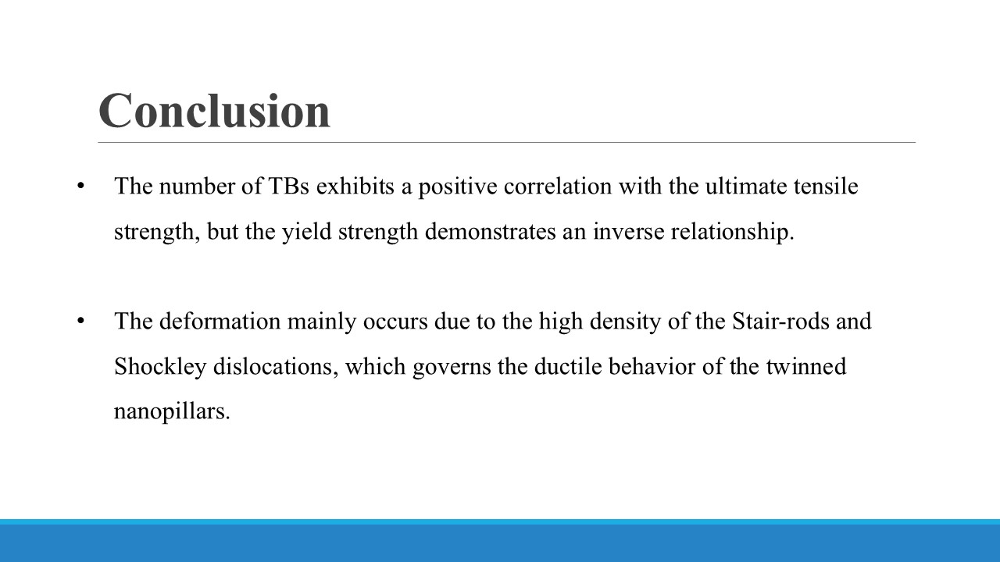

Mohammad Samiul
Hasan
Prospective PhD Applicant
New Jersey, USA
Something About Me
Prospective Ph.D. Research Assistant applicant in the fall 2026. I am a highly analytical Mechanical Engineer with a robust industrial background in CAD & CAE. My expertise combines practical design engineering experience with advanced computational skills in algorithmic problem-solving and machine learning (C++ & Python). I have experience in molecular dynamics (MD) simulations, where I utilize tools like LAMMPS, Atomsk, and OVITO to analyze and predict material behavior at the atomic level (Details on Expertise Page). I am eager to contribute this unique blend of skills to cutting-edge research as I transition into a doctoral program.
Key Research Interests:
- Computational Modeling and Simulation (Materials, Mechanics)
- Applied Machine Learning for Scientific Discovery and Optimization
- Solid Mechanics and Structural Integrity (Failure Analysis and Prediction)
- Biomechanics & Biomedical Engineering
Education
MSc Applied Statistics and Data Science
Jahangirnagar University (JU)
January 2024 - July 2025
GPA: 3.85/4.00 | Final Project is Incomplete
BSc Mechanical Engineering
Shahjalal University of Science and Technology (SUST)
January 2017 - August 2021
GPA: 3.30/4.00
Conference Presentations
1. Tensile Mechanical Performance of Horizontally Twinned Al Nanopillar by Molecular Dynamics Analysis
Presented at: 8th International Conference on Mechanical, Industrial and Energy Engineering(ICMIEE 2024)
Location: Kulna, Bangladesh | Date: January, 2025
Abstract:
Twin boundaries are known for their strengthening influence and elevation of ductility in metallic nanopillars. They function both as a source of dislocation nucleation and as impediments to dislocation mobility. This study employs molecular dynamics simulations to examine the tensile properties, specifically strength, and ductility, of a twinned Al nanopillar featuring a horizontally orientated [111] twin boundary subjected to uniaxial tensile loading. Five models were constructed using Atomsk by varying the number of twin boundaries ranging from 1 up to 7, and an additional Al sample free of twins was also created to compare the changes in twin boundaries. The tensile deformation was performed at room temperature using a constant strain rate of 10^10 s^(-1) for 30 ps. The results indicate that the twinned nanopillars exhibit greater peak strength than the single-crystalline Al model of similar size, suggesting that the ultimate tensile strength is significantly impacted by an increase in the number of twin boundaries. The findings indicated that reduced intertwin spacing resulted in reduced yield strength, elucidating the anomalous Hall-Petch relationship. The post-processing of the simulation data was conducted by dislocation extraction analysis (DXA) provided by OVITO. This study explored variations of deformation mechanisms in relation to varying twin spacings by analyzing defect quantities and dislocation density evolution. This research offers significant insights for the advancement of high-performance ductile aluminum.
 

2. A Molecular Dynamics Study on the Mechanical Properties of Fe-Cu-Ni Nanopillar Under Uniaxial Tensile Load
Presented at: 3rd International Conference on Mathematical Analysis and Application in Modelling 2024 (ICMAAM 2024)
Location: Chattagram, Bangladesh | Date: December, 2024
Abstract:
Alloys are metal materials with multi-principal components that have improved mechanical properties. In this research, we used the Molecular Dynamics (MD) simulation to investigate the mechanical properties of a ternary alloy: Fe-Cu-Ni at different temperatures, with increasing Cu and Ni concentrations on Fe. Four Fe(100-2x)CuxNix models, where x varied from 1% to 4 %, were created using Atomsk. These alloys were pre-heated to 1000K to randomize the atoms' initial configuration and then allowed to equilibrate to guarantee the thermodynamic stabilization of the atoms. The tensile loading was applied using a constant strain rate of 10^10 s^(-1) to allow plastic deformation. Similarly, the Fe, Cu, and Ni metals with similar configurations were also simulated to compare the results. The modulus of elasticity (E) of Fe, Ni, and Cu was calculated to be 128.8 GPa, 179.55 GPa, and 46.8 GPa, respectively, at 300K. The results reveal that Fe0.98Cu0.01Ni0.01 at 300K has better stiffness, and an increased elastic modulus of 133.44 GPa as compared to Fe, and the Ultimate Tensile Strength (UTS) peaked among the other models. The outcomes of the simulation demonstrated a strong linear correlation among temperature, percentages of Cu-Ni concentrations, and the mechanical properties: Elastic modulus and UTS; which may facilitate new alloy nanomaterials designs.
Work Experience
BJIT Limited
Mechanical Design Engineer | November 2024 - July 2025
- Developing manufacturing procedures for designed components.
- Identifying and data analysis for commercial components like fasteners, motors, gears, bearings, valves pumps, ports etc.
- Design/data reviewing, error analysis and solving.
Walton Hi-Tech Industries PLC.
Senior Assistant Director - Mechanical Design Engineer | November 2021 - October 2024
- Designed and developed Five unique Blender and Mixer Grinder models based on market research. Two model was introduced in the market in March 2023 and August 2023, while One is now in the mold-making stage and One in detailed design and prototyping Phase.
- Solved quality related issue in the production line by implementing different standard tests and Poka-yoke in the design.
- Collaborated with the Production Team to create a streamlined production process for the newly designed Mixer Grinder, ensuring efficient and high-quality output.
- Worked on the development and execution of new fixtures for the machines of the Mixer Grinder's Blade Base Project.
Friday Lab, RoboSUST
Mechanical Engineer | January 2018 - November 2019
- Contributed to the development of "Lee," a human-sized walking robot, focusing on critical hardware fabrication (drilling, cutting).
- Designed parts for the robot and printed with 3D printer.
- Assembled the robot leg, hand and body.
- Utilized MATLAB for supporting analytical or control tasks related to the robot's functionality.
Skills & Expertise
Machine Learning
Goal: To build a neural network from scratch to recognize handwritten digits from the MNIST dataset without using any high-level machine learning libraries.
Method: Implemented all key components of the neural network architecture from the ground up using NumPy for matrix operations. This included manual coding of activation functions (ReLU, Softmax), forward and backward propagation algorithms, and the gradient descent optimizer. Matplotlib was used for visualizing the training and validation loss.
Outcome: The model achieved a training accuracy of 98.5% and a test accuracy of 84.3%. This project demonstrates a strong foundational understanding of deep learning concepts, including network architecture, training loops, and optimization algorithms, beyond relying on pre-built frameworks.
Molecular Dynamics Simulation & Analysis


Tools Used: Atomsk, LAMMPS, OVITO
Goal: To simulate the tensile deformation of a single-crystal aluminum nanopillar to calculate its Young's modulus and observe its mechanical behavior at the atomic scale.
Method: A custom aluminum nanopillar model was generated using Atomsk. The model was then subjected to a tensile simulation in LAMMPS, where stress-strain data was collected. The post-processing and visualization of the deformation, including the identification of dislocations and defects, were performed using OVITO.
Outcome: The simulation yielded a Young's modulus of 61.5 GPa, which is in close agreement with established literature values for aluminum. This project demonstrates a comprehensive skill set in preparing, executing, and analyzing complex MD simulations to extract critical material properties.
Programming & Scripting
Autonomous Vehicle Path Tracking
Goal: Developed a Pure Pursuit Controller to enable an autonomous vehicle to accurately follow a predefined path in a simulated environment.
Method: This project uses Python and the Pygame library to simulate a vehicle's motion based on the kinematic bicycle model. The core of the implementation is the Pure Pursuit algorithm, which dynamically calculates the required steering angle to guide the vehicle towards a "lookahead" point on the desired path. The code utilizes NumPy for efficient vector and matrix calculations to manage the vehicle's state and a simple controller loop to continuously update the vehicle's position and orientation.
Outcome: The simulation demonstrates a foundational understanding of robotics and control theory. It effectively showcases a practical application of algorithmic logic and complex mathematical concepts in a visual, real-time environment. This project highlights proficiency in Python for scientific computing and simulation development.

Competitive Programming & Problem Solving
I have solved over 100 problems on platforms like Codeforces and LeetCode, demonstrating strong algorithmic and problem-solving skills.
Key Skills:
- C++ STL: Proficient in using the Standard Template Library for efficient data manipulation.
- Data Structures:
- Time & Space Complexity
- Singly/Doubly Linked Lists, Stacks, Queues, Priority Queues
- Binary Trees, BST, Heaps
- Algorithms:
- Graph Algorithms (BFS, DFS)
- Shortest Path Algorithms (Dijkstra, Bellman-Ford, Floyd-Warshall)
- Dynamic Programming (e.g., 0-1 Knapsack)
- Disjoint Set Union
Project Title: Solving a Nonlinear System Using Newton-Raphson Method in MATLAB
Goal: To find the solution of a system of two nonlinear equations in two variables by applying the Newton-Raphson iterative method.
Method: The project involved defining two nonlinear equations and their Jacobian matrix. I implemented one iteration of the Newton-Raphson update formula, and then calculated the relative error between successive iterations to track convergence. The core functions such as matrix inversion and other vector operations were used to perform the calculations.
Outcome: The program successfully performed one Newton-Raphson iteration starting from an initial guess. It outputted the updated estimate of the solution vector and the percentage error, demonstrating how MATLAB can be used to implement numerical root-finding techniques for nonlinear systems efficiently.


Projects
Construction of a 3 DOF SCARA Manipulator with Multi-functional End Effector.
This is an academic project. In this project, I learned about Kinematics, Inverse kinematics math problems, how to implement them, Python programming.
Bi-pedal Humanoid Walking Robot “Lee.”
Lee is the human-sized walking robot in Bangladesh developed by Friday lab. In this project, my main job was hardware related, drilling, cutting, assembling the hands, legs, body and also worked with MATLAB.
Project Teaser Video Media Coverage about the ProjectArduino Based Line Follower Robot with PID Controller Mechanism.
Built a line follower with the most popular control mechanism, PID. I learned a lot of this during this project, such as teamwork, working under pressure, and dealing with failure.